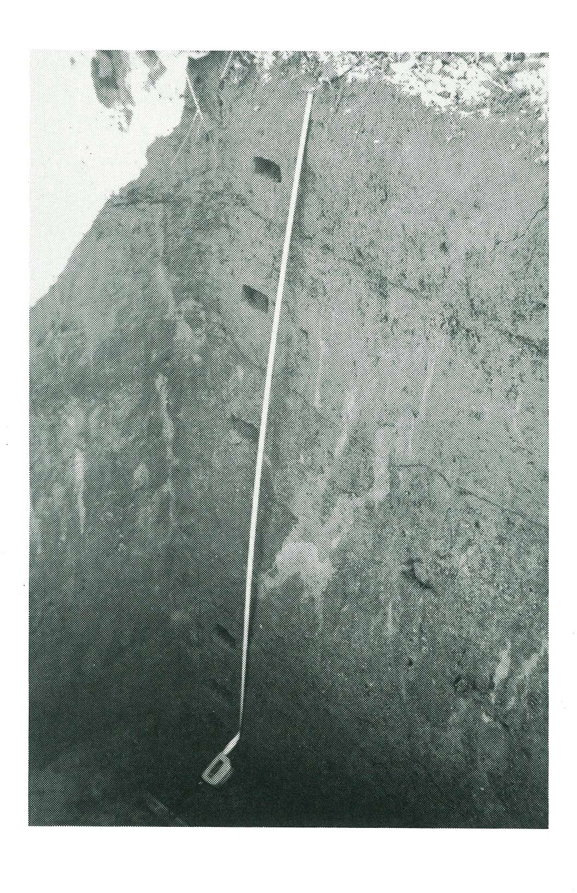

圖 版
〔圖版 1〕 東에서 西쪽으로 본 發掘光景
〔圖版 2〕 S4W5-Ⅰ(S3W4-Ⅰ)의 Control Pit
〔圖版 3〕 S4W5-Ⅰ Pit의 3 층까지 하강

〔圖版 4〕 S4W5-Ⅰ Pit 의 층위
〔圖版 5〕 S4W5-Ⅰ(東端) 유물출토상태
〔圖版 6〕 S11W8- Ⅰ Pit 발굴광경
〔圖版 7〕 S11W8- Ⅰ Pit 유물출토상태
〔圖版 8〕 S11W8- Ⅰ Pit 발굴광경
〔圖版 9〕 S11W8- Ⅰ Pit 유물노출상태
〔圖版 10〕 S11W8- Ⅰ Pit 침니 (Silt) 층
〔圖版 11〕 S11W8- Ⅰ Pit 표토제거광경
〔圖版 12〕 S11W8- Ⅰ Pit 암반 부식토 노출상태
〔圖版 13〕 단면기 (Chopper) (3층)
〔圖版 14〕 작은도끼 (Cleaver) (3층)
〔圖版 15〕 첨두기 (Point) (3층)
〔圖版 16〕 밀개 (End Scraper)
〔圖版 17〕 단면기 (Chopper) (2층)
〔圖版 18〕 단면기 (Chopper) (2층)
〔圖版 19〕 단면기 (Chopper) (2층)
〔圖版 20〕 단면기 (Chopper) (2층)
〔圖版 21〕 다면기 (Polyedrique) (2층)
〔圖版 22〕 작은도끼 (Cleaver) (2층)
〔圖版 23〕 작은도끼 (Chopper) (2층)
〔圖版 24〕 긁개 (Side-Scraper) (2층)
 〔圖版 25〕 긁개 (Double Side Scraper) (2층)
〔圖版 25〕 긁개 (Double Side Scraper) (2층)
 〔圖版 26〕 밀개 (End scraper) (2층)
〔圖版 27〕 송곳 (Borer) (2층)
〔圖版 28〕 단면기 (Chopper) (2층)
〔圖版 29〕 단면기 (Chopper) (2층)
〔圖版 30〕 단면기 (Chopper) (2층)
〔圖版 31〕 양면기 (Chopping - tool) (2층)
〔圖版 32〕 양면기 (Chopping - tool) (2층)
〔圖版 33〕 양면기 (Chopping - tool) (2층)
〔圖版 26〕 밀개 (End scraper) (2층)
〔圖版 27〕 송곳 (Borer) (2층)
〔圖版 28〕 단면기 (Chopper) (2층)
〔圖版 29〕 단면기 (Chopper) (2층)
〔圖版 30〕 단면기 (Chopper) (2층)
〔圖版 31〕 양면기 (Chopping - tool) (2층)
〔圖版 32〕 양면기 (Chopping - tool) (2층)
〔圖版 33〕 양면기 (Chopping - tool) (2층)
 〔圖版 34〕 석핵 (Core) (2층)
〔圖版 34〕 석핵 (Core) (2층)
 〔圖版 35〕 석핵 (Core) (2층)
〔圖版 36〕 석핵 (Core)
〔圖版 37〕 석핵 (Core) (2층)
〔圖版 38〕 작은도끼 (Cleaver) (2층)
〔圖版 39〕 작은도끼 (Cleaver) (2층)
〔圖版 40〕 작은도끼 (Cleaver) (2층)
〔圖版 41〕 작은도끼 (Cleaver) (2층)
〔圖版 42〕 긁개 (Side - Scraper) (2층)
〔圖版 43〕 긁개 (Side - Scraper) (2층)
〔圖版 44〕 긁개 (Double Side - Scraper) (2층)
〔圖版 45〕 긁개 (Side - Scraper) (2층)
〔圖版 46〕 긁개 (Side-Scraper) (2층)
〔圖版 47〕 긁개 (Double Side-Scraper) (2층)
〔圖版 48〕 긁개 (Side-Scraper) (2층)
〔圖版 49〕 긁개 (Side-Scraper) (2층)
〔圖版 50〕 긁개 (Side-Scraper) (2층)
〔圖版 51〕 긁개 (Side-Scraper) (2층)
〔圖版 52〕 톱니석기 (Denticule) (2층)
〔圖版 53〕 홈석기 (Notch) (2층)
〔圖版 54〕 홈석기 (Notch) (2층)
〔圖版 55〕 첨두기 (Point) (2층)
〔圖版 56〕 밀개 (End- Scraper) (2층)
〔圖版 57〕 밀개 (End-Scraper) (2층)
〔圖版 58〕 밀개 (End-Scraper) (2층)
〔圖版 59〕 밀개 (End-Scraper) (2층)
〔圖版 60〕 밀개 (End-Scraper) (2층)
〔圖版 61〕 밀개 (End-Scraper) (2층)
〔圖版 62〕 송곳(Borer) (2층)
〔圖版 63〕 송곳(Borer) (2층)
〔圖版 35〕 석핵 (Core) (2층)
〔圖版 36〕 석핵 (Core)
〔圖版 37〕 석핵 (Core) (2층)
〔圖版 38〕 작은도끼 (Cleaver) (2층)
〔圖版 39〕 작은도끼 (Cleaver) (2층)
〔圖版 40〕 작은도끼 (Cleaver) (2층)
〔圖版 41〕 작은도끼 (Cleaver) (2층)
〔圖版 42〕 긁개 (Side - Scraper) (2층)
〔圖版 43〕 긁개 (Side - Scraper) (2층)
〔圖版 44〕 긁개 (Double Side - Scraper) (2층)
〔圖版 45〕 긁개 (Side - Scraper) (2층)
〔圖版 46〕 긁개 (Side-Scraper) (2층)
〔圖版 47〕 긁개 (Double Side-Scraper) (2층)
〔圖版 48〕 긁개 (Side-Scraper) (2층)
〔圖版 49〕 긁개 (Side-Scraper) (2층)
〔圖版 50〕 긁개 (Side-Scraper) (2층)
〔圖版 51〕 긁개 (Side-Scraper) (2층)
〔圖版 52〕 톱니석기 (Denticule) (2층)
〔圖版 53〕 홈석기 (Notch) (2층)
〔圖版 54〕 홈석기 (Notch) (2층)
〔圖版 55〕 첨두기 (Point) (2층)
〔圖版 56〕 밀개 (End- Scraper) (2층)
〔圖版 57〕 밀개 (End-Scraper) (2층)
〔圖版 58〕 밀개 (End-Scraper) (2층)
〔圖版 59〕 밀개 (End-Scraper) (2층)
〔圖版 60〕 밀개 (End-Scraper) (2층)
〔圖版 61〕 밀개 (End-Scraper) (2층)
〔圖版 62〕 송곳(Borer) (2층)
〔圖版 63〕 송곳(Borer) (2층)
 〔圖版 64〕 조각기 (Burin) (2층)
〔圖版 65〕 S4W5- Ⅰ. Control Pit 3층출토의 참나무 (Oak)
〔圖版 66〕 S4W5- Ⅰ의 表土에서 採集된 멧돼지앞니 (Sus-Scrofa)
〔圖版 64〕 조각기 (Burin) (2층)
〔圖版 65〕 S4W5- Ⅰ. Control Pit 3층출토의 참나무 (Oak)
〔圖版 66〕 S4W5- Ⅰ의 表土에서 採集된 멧돼지앞니 (Sus-Scrofa)